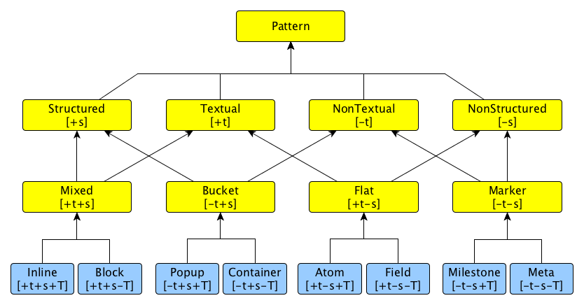
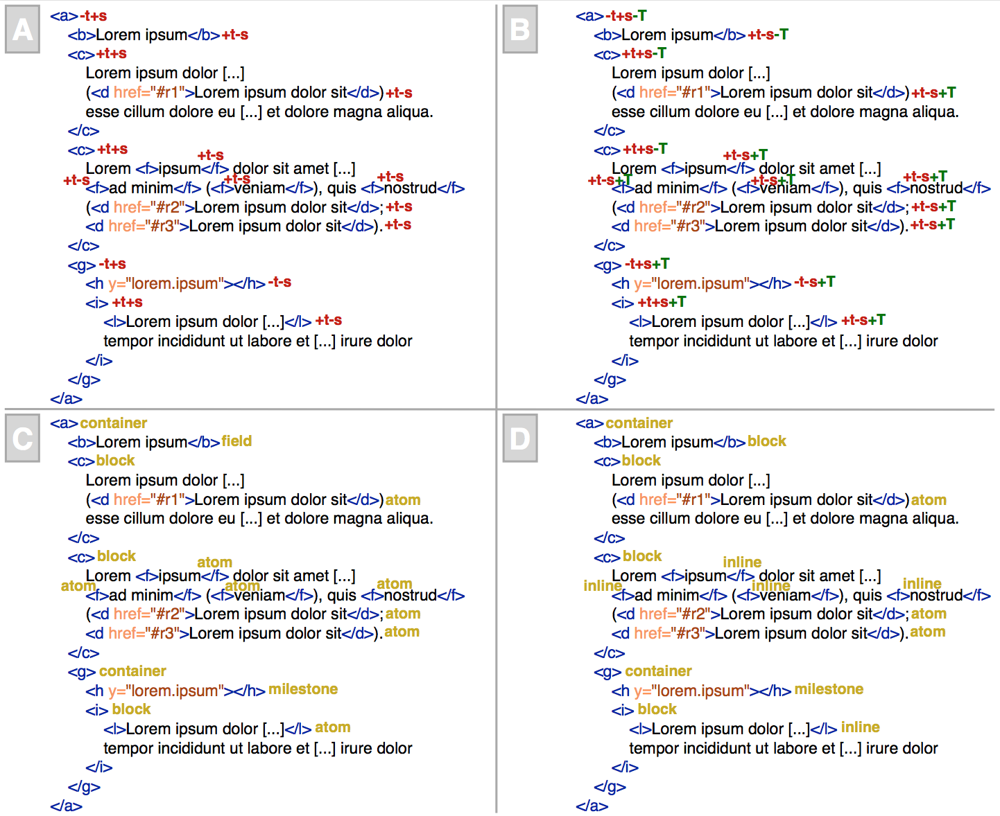

Semantic Publishing concerns the use of Web and Semantic Web technologies and standards for enhancing a scholarly work semantically so as to improve its discoverability, interactivity, openness and (re-)usability for both humans and machines. Recently, people suggest that the semantic enhancement of a scholarly work should be done by the authors of that scholarly work and it should be considered as part of the contribution and reviewed properly. However, the main bottleneck for a concrete adoption of this approach is that authors should always spend additional time and effort for adding such semantic annotations, and often they do not have that time available. Thus, the most pragmatic way to convince authors in doing this additional job is to have services that enable the automatic annotation of their scholarly articles by parsing the content that they have already written, thus reducing the total time spent by them to few clicks for adding the semantic annotations. In this article, I propose a generic approach called compositional and iterative semantic enhancement (CISE) that enables the automatic enhancement of scholarly papers with additional semantic annotations in a way that is independent of the markup used for storing scholarly articles and the natural language used for writing their content.
The scholarly communication domain has been involved in several revolutions concerning the way scientific knowledge has been shared in the past 300 years. Gutenberg's introduction of the print (around 1450) together with the creation of formally-defined groups of scholars (e.g. the Royal Society founded in 1660) have permitted research works to be shared according to a well-known medium, i.e. print volumes. Notable examples of this era are Philosophical Transactions published by the Royal Society (first issued in 1776, and still available for submissions) and The Lancet (first issued in 1823, and currently published by Elsevier). Nothing actually changed in such domain until the introduction of the Internet (considering ARPANET as its first implementation around 1960), where communicating research results could happen in a very fast and effective way by means of e-mails. However, the actual first revolution in scholarly communication, since the introduction of the Gutenberg's printer, happened with the advent of the World Wide Web, or WWW, in 1989. The WWW has permitted the explosion of the Digital Publishing, i.e. the use of digital formats for the publication (e.g. PDF) and distribution (e.g. the Web) of scholarly works. In the last twenty years, the availability of new Web technologies and the reduction of the cost for storage have resulted in an incredible growth in terms of the scholarly material available online and in a consequent acceleration of the publishing workflow. However, it is with the advent of one specific set of Web technologies, i.e. Semantic Web technologies , that we have started to talk about Semantic Publishing.
Within the scholarly domain, Semantic Publishing concerns the use of Web and Semantic Web technologies and standards for enhancing a scholarly work semantically (by means of plain RDF statements , nano-publications , etc.) so as to improve its discoverability, interactivity, openness and (re-)usability for both humans and machines – assumptions that have been implicitly adopted by the FAIR (Findable, Accessible, Interoperable, Re-usable) data principles as well . First examples of Semantic Publishing regarded the use of manual (e.g. ) or (semi-)automatic processes (e.g. ) for enriching scholarly works with formal semantics after their publication, and by people who, not necessarily, have authored such works.
The misalignment between who authored the original work and who added semantic annotations upon it is the focal point discussed by the editors-in-chief of this journal in this introductory issue. Their point is that, after having experimented with the Semantic Publishing, we should start to push and support what they call Genuine Semantic Publishing. This genuineness basically refers to the fact that the semantic enhancement of a scholarly work should be actually done by the authors of that scholarly work and it should be included in it since the beginning. According to this perspective, the semantic annotations the scholarly work includes should be considered as proper part of the contribution and treated as such (e.g. reviewed properly).
While the Genuine Semantic Publishing is, indeed, the right way to consider the question, it still needs specific incentives for convincing the authors to spend more time on semantically enriching their articles in addition to all the textual content they have already written. In recent experiments colleagues and I have done in the context of the SAVE-SD workshops, described in , the clear trend is that, besides a few who actually believe in the Semantic Publishing and even if we made available appropriate incentives (i.e. prizes) for people submitting HTML+RDF scholarly papers, generally only a very low number of semantic statements is specified by the authors. In fact, the number of statements in a single paper presented during SAVE-SD workshops was found to range from 24 to 903, yielding a median value of 46 (25th percentile 34, 75th percentile 175. The possible reasons for this behaviour, as identified by the study, could be the lack of appropriate support (e.g. graphical user interfaces) for facilitating the authors in the annotation of scholarly works with semantic data.
However, I do not think that this is even the main issue that prevents a huge mass of authors from enhancing their papers with semantic annotations. I firmly believe that the main bottleneck for a concrete adoption of Genuine Semantic Publishing principles is author's available time. While interfaces may simplify the creation of such semantic data, an author should always spend additional time and effort for actually creating them, and often she does not have that time available. Thus, the most pragmatic way to convince authors in doing this additional job is to have services that do it for them in an automatic fashion by parsing somehow the content that the authors have already written, thus by reducing the entire time spent by them to few clicks for adding the semantic annotations.
In the past years several tools have been developed for addressing the automatic annotation of scholarly texts according to one or more particular dimensions, e.g. by considering documents available in specific document formats – e.g. the SPAR Extractor Suite developed for the RASH format – or written in a particular language such as English – e.g. FRED. However, these tools are typically tied to certain requirements – in the aforementioned cases, the use of a specific markup for organising the document content and of a particular language for writing its text – that prevent their adoption in broader contexts. Considering the two aforementioned dimensions, i.e. markup and language, I wonder if we can propose an approach that allows a machine to infer some of the semantic connotations of scholarly articles without knowing and, thus, considering the particular markup language used for storing them nor the semantics hidden behind their text written in a particular language, such as English.
It is worth mentioning that approaching the problem of inferring semantics of scholarly articles from the aforementioned perspective, i.e. without considering their markup specification nor the semantics of their textual content, configures it as a Document Engineering issue, rather than a pure Computational Linguistics one. Thus, an important aspect to investigate in this context is whether we can use the sole syntactic organisation of the text in a scholarly article (i.e. the way the various parts of the article are contained by each other) for enabling the automatic annotation of the article with meaningful entities describing it from a semantic perspective. It is possible to abstract this view into a more generic research question: can the pure syntactic organisation of the various parts composing a scholarly article convey somehow its semantic and rhetorical representation, and to what extent?
While I do not have a definite answer to that question, existing theories – such as the principle of compositionality and the downward causation, which I discuss with more details in – seem to suggest that, under certain conditions, they can provide theoretical foundations for answering positively to that question. Inspired by the way these theories have been used in several domains, I have developed a generic approach called compositional and iterative semantic enhancement, a.k.a. CISE (pronounced like size), that would enable the implementation of mechanisms for the automatic enhancement of scholarly articles by considering the sole containment between their components. This would be possible by means of an iterative process composed of several steps, where each step is responsible for providing additional semantic connotations to article components by applying specific rules on the enhancements obtained as outcomes of the previous steps.
In order to prove the applicability of CISE and, thus, to provide a partial answer to the aforementioned research question, we have implemented and run some CISE-based algorithms. These algorithms enable us to annotate various components of scholarly articles with information about their syntactic structure, structural semantics, and basic rhetorical connotation, by using a collection of ontologies that form a kind of hierarchy that, ideally, could be used to describe several aspects of a semantic publication. The outcomes of some experiments we have run by using these CISE-based algorithms are encouraging and they seem to suggest the applicability and feasibility of the whole approach.
The rest of the paper is organised as follows. In I introduce some of the most important research works on this topic. In I introduce the foundational theories that have been used to derive the approach for automating the enhancement of scholarly articles. In I introduce CISE by describing its main conditions needed for running it and by explaining the algorithm defining the approach. In I briefly discuss the outcomes of the application of some implementations of CISE on a corpus of scholarly articles stored in XML formats. In I present some limitations of the approach, as well as future directions of research I will investigate in this context. Finally, in I conclude the paper, reprising the research question mentioned above.
Related works
In the context of the Document Engineering community, there are past works that have proposed algorithms for the characterization and identification of particular structural behaviours of various parts of text documents. For instance, in , Tannier et al. present an algorithm based on NLP tools for assigning the category (out of three) associated to each element of an XML document. These categories are hard tag (i.e. those elements that interrupt the linearity of a text, such as paragraphs and sections), soft tag (i.e. the elements that identify significant text fragments that do not break the text flow, such as emphasis and links), and jump tag (i.e. those elements that are detached from the surrounding text, such as footnotes and comments).
In another work , Zou et al. propose a categorization of HTML elements based on two classes: inline (i.e. those that do not provide horizontal breaks in the visualisation of an HTML document) and line-break tags (i.e. the opposite of the inline class). They also have developed an algorithm that uses this categorization and a Hidden Markov Model for identifying structural roles (title, author, affiliation, abstract, etc.) of textual fragments - using a corpus of medical journal articles stored in HTML as an example of application.
The approach proposed in introduces an algorithm for the identification of junk structures in HTML documents, such as navigation menus, advertisements, and footers. In particular, the algorithm is based on the recognition of recurring hierarchies of nested elements and allows one to exclude all the HTML markup that does not concern the actual content of the document.
Other approaches based on the application of Optical Character Recognition (OCR) techniques to a corpus of PDF documents, with the goal of reconstructing the organisation of a document by marking its most meaningful parts up, have been proposed in the past as well. For instance, in , Kim et al. propose an approach based on the OCR recognition of article zones so as to label them with particular categories, such as affiliations, abstract, sections, titles and authors. Similarly, in , Taghva et al. use an OCR technique for reconstructing the logical structure of technical documents starting from the information about fonts and geometry of a scanned document.
Several other works have introduced theories and algorithms for the identification of various characterizations of scholarly articles, such as entities cited in articles (e.g. ), rhetorical structures (e.g. ), arguments (e.g. ), and citation functions (e.g. , and ). In addition, models and ontologies have been proposed for creating and associating annotations to documents and their parts, e.g. , , , and .
The main part of the aforementioned works propose algorithms based on NLP tools, Machine Learning approaches, and OCR frameworks for annotating the various parts of a document with specific categories. Contrarily, as already mentioned in the previous section, the work I present in this article does not use any of the aforementioned techniques. In fact, it is based on a pure Document Engineering analysis of the containment relations between the various document parts, without caring about any aspect related to the language used to write the document and to the markup language used for storing it.
A pathway from syntax to semantics
The principle of compositionality states that the meaning of an expression is a function of, and only of, the meanings of its parts together with the method by which those parts are combined. This definition is quite broad. In fact, it does not precisely explicate several aspects, such as what is a meaning, what is a function, and what is a part of an expression. Despite its genericness, this principle has been used in works of several disciplines, such as:
Linguistics, e.g. Richard Montague, in one of his seminal works , proposes an approach that allows the definition of a precise syntax of a natural language (such as English) by means of a set of syntactic categories that are mapped to their possible semantic representations expressed as mathematical formulas by means of explicit conversion rules. In particular, the way the syntactic categories are combined between them for describing the syntactic structure of a sentence is used to derive its meaning by following the aforementioned conversion rules;
Computer Science, e.g. the Curry-Howard isomorphism that states that the proof system and the model of computation (such as the lambda calculus) are actually the same mathematical tool presented from two different perspectives. In this light, mathematical proofs can be written as computer programs and, thus, these proofs can be run, and vice versa;
Molecular Biology, e.g. the reductionist approach used by Crick , among others, which claims that the behaviour of high-level functions of a larger biological system (e.g. an organism) can be explained by looking at the ways its low-level components actually work (e.g. its genes).
I speculate that the same principle of compositionality can be used for inferring high-level semantics from the low-level structural organisation of a scholarly article. The idea would be to annotate the various parts of a scholarly article according to diverse layers of annotations, from the lower syntactic layers to higher semantic layers. For instance, a possible stratification of such layers (from the most syntactic ones to the most semantic ones) is illustrated as follows:
syntactic containment, i.e. the dominance and containment relations that exist between the various parts of scholarly articles;
syntactic structures, i.e. the particular structural pattern (inline, block, etc.) to which each part is compliant with;
structural semantics, i.e. the typical article structures such as sections, paragraphs, tables, figures;
rhetorical components, i.e. the functions that characterize each part (e.g. a section) with a specific behaviour such as introduction, methods, material, data, results, conclusions;
citation functions, i.e. the characterization of all inline citations with the reason why the authors have cited certain articles ;
argumentative organisation, i.e. the relations among the various parts of scholarly articles according to particular argumentative models such as Toulmin's ;
article categorization, i.e. the type, either in terms of publication venue (journal article, conference paper, etc.) or content (research paper, opinion, etc.), of each scholarly article;
discipline clustering, i.e. the identification of the discipline(s) to which each article belongs to.
The graph on the left in shows a strict application of the principle of compositionality. While it may seem valid from an intuitive perspective, past studies (e.g. ) have proved that the sole application of such principle could not guarantee a successful recognition of all the possible interactions existing in a layered system, such as the one that defines the various kinds of meanings that each part of a scholarly article may have. For instance, it is possible that, sometimes, some semantic annotations of a higher layer can cause the specification of new meanings to a lower layer. This causal relationship is called downward causation, and it has been one of the main objections to a purely reductionist approach for the description of the composition and behaviour of a biological system. Thus, the graph on the right in illustrates the simultaneous use of the principle of compositionality and the downward causation for inferring the various meanings (at different layers) associated with the parts of a scholarly article, which also admits the possibility that a layer can convey meaningful information to any of the higher/lower layers.
Two graphs depicting possible uses of the principle of compositionality and the downward causation in the context of scholarly articles. The graph on the left depicts a pure application of the sole principle of compositionality (described by the bottom-to-top black arrows in the figure), where the information in a particular layer is totally derived from the information available in the previous one. In the graph on the right, the information in each layer can be derived by means of the information made available by one or more of the lower layers (principle of compositionality) or by one or more of the higher layers (downward causation, described by the top-to-bottom blue arrows in the figure).
Of course, in order to use the principle of compositionality and the downward causation for inferring the characterization (at different layers) of the various parts of a scholarly article, it is important to clarify what are their main components – i.e. the parts of an expression, their meanings, and the functions that enable either the compositionality or the downward causation between layers – in the context of scholarly articles. I define these three aspects as follows:
a part of a scholarly article is any content enclosed by a particular marker – for instance, if we consider a scholarly article stored with an XML-like markup language, each markup element defines a particular part of that scholarly article. In the example shown in , the empty boxes with red border, the blue-underlined strings, and the italic and strong strings are delimiting the various parts of the scholarly article, represented by specific markup elements in the related XML sources;
the meaning of each part is an informative specification of the types or properties characterizing that part. In the example shown in , the red boxes with white text as well as the pink rectangles are defining specific semantics of some of the article parts;
a function is an associative rule that allows, given particular known premises, the specification of a meaning to a particular part of a scholarly article.
The partial HTML version of a portion of the article entitled The CrebA/Creb3-like transcription factors are major and direct regulators of secretory capacity [top panel (A)], and the same containment structure [bottom panel (B)] stored according to a fictional XML-based language, where no meaningful textual or visual content is explicit. The empty boxes with a red border, the blue-underlined strings, as well as the italic and strong strings, describe the various parts of the article. The pink rectangles are describing in-text reference pointers to some bibliographic references, while the meaning of the other parts is defined by means of the white labels enclosed in the red rectangles.
Considering the aforementioned definitions, the intuition is that we can apply iteratively rules conceived following the principle of compositionality and the downward causation so as to allow the association of several meanings to article parts, starting from the pure syntactical containment of these parts so as to derive their structural semantics, their rhetoric, and other semantic representations of the article. For instance, recalling the stratification in eight layers introduced above, it is possible to create rules that, starting from a low-level definition of the structure of an article (e.g. the organisation of the markup elements that have been used to describe its content – layer 1), describe each markup element according to more general compositional patterns depicting its structure (e.g. the fact that a markup element can behave like a block or an inline item – layer 2). Again, starting from the definitions in the first two layers, it would be possible to characterize the semantics of each markup element according to specific categories defining its structural behaviour (e.g. paragraph, section, list, figure, etc. – layer 3). Along the same lines, starting from the aforementioned layers, it would be possible to derive the rhetorical organisation of a scholarly article (e.g. identifying the argumentative role of each part such as introduction, methods, material, experiment, inline reference, etc. – layer 4). In addition, backwardly, one can use some of the characterizations specified in layer 4 for introducing more precise behaviours to the parts annotated in layer 3 (e.g. to identify that the section that contains other elements (except the title) referenced by some inline references is actually the bibliography section, and that the section that contains it is the bibliography of the article). And so on and so forth.
In addition, as mentioned in , all these associations should be specifiable without considering neither the natural language used for writing the paper nor the particular markup language used to store it. For instance, considering the two examples depicted in , this means that a mechanism developed for inferring the semantics of the various parts in the article shown in the top panel of the figure (A) should be able to assign the same semantics also to the article shown in the bottom panel of the figure (B), since the two sources describe the same syntactic containment between article parts.
Compositional and iterative semantic enhancement of scholarly articles
Taking inspiration from the ideas introduced in and restricting the possible input documents to the sole scholarly articles available in a reasonable markup language (e.g. an XML-like language), it is possible to propose an approach for retrieving additional higher-level characterizations of the parts of a scholarly article starting from their lower-level conceptualisations (by means of the principle of compositionality) and vice versa (by means of the downward causation). I have named this approach compositional and iterative semantic enhancement (or CISE, pronounced size) of scholarly articles. In particular, there are a series of conditions that should be satisfied for applying CISE in a broad scenario, i.e.:
[hierarchical markup] the source of a scholarly article is available according to (or can be easily converted into) a markup language that is appropriate for conveying the typical hierarchical containment of the various parts of scholarly articles;
[language agnosticism] there is no need of having a prior knowledge of the particular natural language used for writing the scholarly article;
[layer inter-dependency] a layer describing a particular conceptualisation of the parts of a scholarly article is dependent somehow on the conceptualisation of at least another lower/higher layer;
[inter-domain reuse] several of the structural and semantic aspects typically described in scholarly articles are shared across various research domains;
[intra-domain reuse] scholarly documents of a specific domain always share several structural and semantic aspects between them, even if such aspects are not implicitly adopted by other external domains.
The pseudo-code shown in introduces the main procedure of CISE. It works taking three objects as inputs (line 1): a set of marked-up documents to process, a set of annotations referring to the various parts contained in the documents, and a list of rules responsible for inferring new annotations from the documents and the existing annotations. Each rule is actually a function taking two parameters as input, a set of documents and set of annotations. A rule can be run or not according to the current status of the inputs it receives. For instance, some annotations can activate a particular rule application on a certain document, while others cannot. The output of a rule is a tuple to_add, to_remove that are two sets of annotations that should be added to and removed from to the current set of annotations respectively. Each annotation is a tuple documenti, layerj, propertyh where:
documenti is the document where the annotation has been specified;
layerj is the layer defining the kind of information depicted by the annotation;
propertyh is a set of statements related to a particular part (i.e. a markup element) of documenti.
After the initialization of some variables (line 2), the main loop of CISE (line 4) continues until new annotations are added or removed from the current set of annotations available. The rationale behind this choice is that the application of the rules can change the status of the set of annotations specified and, consequently, it can create the premises for running a rule that was not activated before. The following lines (5-6) set the variables that are used for checking if some modifications to the set of annotations are introduced as consequence of an iteration.
The following loop (lines 8-11) is responsible for applying all the rules to all the documents and all the annotations specified as input. As anticipated before, the application of a rule to the documents and the annotations returns two sets (line 9): one containing the annotations that should be added, the other containing the annotations that should be removed. These are actually removed from (line 10, where - is the intersection operator between sets) and added to (line 11, where | is the union operator between sets) the current set of annotations. Finally, the variable final_annotations is incremented with the number of annotations added/removed to/from the current set of annotations (line 13).
If, after the application of all the rules, no modifications have happened to the current set of annotations, then the algorithm terminates returning the updated annotation set (line 15). Otherwise, the algorithm runs a new iteration of the main loop (line 5).
In the following section, I introduce some outcomes of some implementation of CISE I have developed with other colleagues in my research group. These outcomes aim at providing the first evidence of the feasibility of CISE for inferring the characterizations of the parts of a scholarly article according to different layers, each depicting a particular kind of information. In addition, these outcomes would provide a partial (and positive) answer to the research question introduced in – i.e. whether it is possible to derive the semantic and rhetorical representation of a scholarly article from its syntactic organisation.
Implementations of CISE
In the past years, I have experimented extensively, with other colleagues in my research group, possible paths for implementing the approach depicted by CISE, introduced in . Our goal was to start from the pure syntactic containment of the various parts composing scholarly articles so as to derive additional semantic connotations of them. In particular, each implementation of CISE we have developed aims at inferring new annotations related to one layer only, which should describe a specific kind of information.
In our experiments, all the annotations of a layer are defined according to a particular ontology. To this end, we have identified a collection of ontologies that, ideally, could be used to describe the first four layers of those introduced in , i.e.:
syntactic containment: EARMARK – it provides an ontologically precise definition of markup that instantiates the markup of a text document as an independent OWL document outside of the text strings it annotates;
syntactic structures: Pattern Ontology – it is an ontology that allows the segmentation of the structure of digital documents into a small number of atomic components, i.e. the structural patterns, that can be manipulated independently and re-flowed in different contexts;
structural semantics: DoCO – it provides a structured vocabulary of structural document components (paragraph, section, list, figure, table, etc.);
rhetorical components: DEO) – it provides a structured vocabulary for rhetorical elements within documents (introduction, discussion, acknowledgements, etc.).
The identification of all the information related to the aforementioned layers is a quite complex work of analysis and derivation. These implementations are a clear evidence that the principles and the approach depicted by CISE are sound, at least to a certain extent, and that the automatic enhancement of scholarly articles by means of Semantic Publishing technologies can be reached without necessarily using tools that rely on natural language prerequisites or specific markup schemas. In the following subsections, we briefly introduce the outcomes of our experimentations with CISE.
From containment to structural patterns
The idea of understanding in which way the structure of scholarly documents can be segmented into smaller components, so as to manipulate them independently for different purposes, is a topic that colleagues and I have studied extensively in the past. The main outcome of our research on the topic, described in , is the proposal of a theory of structural patterns for digital documents at large that are sufficient to express what most users need for writing scholarly papers in terms of document constituents and components.
The basic idea behind this theory is that each element of a markup language should comply with one and only one structural pattern, depending on the fact that the element:
can or cannot contain text (+t in the first case, -t otherwise);
can or cannot contain other elements (+s in the first case, -s otherwise);
is contained by another element that can or cannot contain text (+T in the first case, -T otherwise).
By combining all these possible values – i.e. ±t, ±s, and ±T – we basically obtain eight core structural patterns: inline, block, popup, container, atom, field, milestone, meta. These patterns are described in the Pattern Ontology and are summarised in .

The taxonomical relations between all the classes defined in the Pattern Ontology. The arrows indicate sub-class relationships between patterns (e.g. Mixed is sub-class of Structured), while the values ±t, ±s, and ±T between square brackets indicate the compliance of each class to the theory of patterns introduced in . In particular, the top yellow classes define generic properties that markup elements may have, while the bottom light-blue classes define the actual patterns identified by our theory.
In colleagues and I have experimented a CISE implementation for assigning structural patterns to markup elements XML sources, without relying on any background information about the vocabulary, its intended meaning, its schema, and the natural language in which they have been written. The main steps of the algorithm implemented are shown in .
A Python-like pseudo code reusing the code introduced in for creating the annotations related to the first two layers.
This new algorithm (line 1) is organised in three main steps, each re-using the mechanism introduced in . The first step (line 2) aims at retrieving all the annotations referring to the first layer (i.e. syntactic containment) by representing all the XML documents in input according to EARMARK . This passage is handled by the function convert_into_earmark which populates the initial set of annotations (that is empty) with all the statements that guarantee an ontological description of document markup.
The second step (lines 4-7) is in charge of assigning, to each instance of each element of each document, the ±t and ±s values according to the kinds of nodes (i.e. textual nodes and/or markup elements) such instance contains (function assign_t_s_properties) and the ±T values according to the previous assignments (function assign_T_properties). Finally, the actual structural pattern is specified using all the aforementioned assignments (function assign_patterns).
The third step (lines 9-11) is responsible for harmonising the pattern association of all the instances of the same element. For instance, it would be possible that, in the same document, two instances of an element x are assigned to two different patterns, e.g. atom and inline. However, occasionally, it would be possible to generalise these assignments so as to have the same pattern specified for all the instances of the same element – e.g. in the previous example, all the instances of x assigned to the pattern atom can be safely assigned to the pattern inline since it is more flexible, allowing the containment of both text nodes and markup elements. This operation of harmonisation applied on all the pattern assignments of a document aims at reaching the local coherence of the assignments (function reach_local_coherence) – i.e. when all the instances of each markup element in a document are assigned to the same pattern. It is worth mentioning that there are situations where the local coherence cannot be reached for some documents. In this cases, all their pattern assignments are removed, so as not to be processed by the following rules. In addition, this harmonisation operation can be applied to all the instances of all the markup elements contained in all the documents that have been found locally coherent. In this case, we talk about reaching the global coherence of the pattern assignments (function reach_global_coherence). Finally, the results of these associations are returned (line 13).

Four snapshots of the same excerpt of an XML document, describing the execution of the algorithm introduced in .
In , I show an execution of the algorithm in using the document introduced in the panel B of . In particular, panel A shows the outcomes of the function assign_t_s_properties, supposing that the containment relations of the elements have been already described by the annotations included in layer 1. Panel B completes the previous assignments with those introduced by the function assign_T_properties. Panel C depicts only the outcomes of the function assign_patterns (without showing again the previous assignments). Finally, panel D shows some modifications of the pattern assignments due to the tentative of reaching local and global coherence (functions reach_local_coherence and reach_global_coherence).
In order to understand what structural extent patterns are used in different communities, we have executed this CISE-based algorithm on a huge set of documents stored according to different XML-based markup languages. In particular, some of these markup languages, e.g. TEI and DocBook , are not inherently pattern-based – i.e. it is possible to use them, in principle, to write locally/globally incoherent documents. However, this experimentation allowed us to reached the following conclusions:
in a community (e.g., a conference or a journal) that specifies the use of a very extensive, permissive, and non-pattern-based markup language, the large majority of authors use a pattern-based subset of such language for writing their scholarly articles. This conclusion has been derived by analysing the outcomes of the algorithm execution, as illustrated in ;
only a small number of pattern-based documents, stored by using the same markup language and coming from different communities of authors, is needed for automatically generating generic visualisations for all documents stored in that markup language (regardless they are pattern-based or not) included in the communities in consideration. This conclusion has been empirically demonstrated by developing a prototypical tool, called PViewer, which implements such automatic visualisation mechanism, as introduced in .
It is worth mentioning that, once the algorithm has identified that all the individuals of the markup element x included in pattern-based documents of a certain community comply with a particular pattern, then it is possible to implicitly associate the same pattern also to all the individual of the same element included in non-pattern-based documents of the same community. As a consequence, these assignments can also provide a guide to authors (or even to automatic tools) for adjusting the current organisation of non-pattern-based documents so as to convert them into proper pattern-based ones.
From structural patterns to structural semantics
The systematic use of the patterns introduced in allows authors to create unambiguous, manageable and well-structured documents. In addition, thanks to the regularity they provide, it is possible to perform complex operations on pattern-based documents (e.g. visualisation) even without knowing their vocabulary. Thus, the intuition is that it is possible to implement more reliable and efficient tools and algorithms that can make hypotheses regarding the meanings of document fragments, that can identify singularities and, that can study global properties of sets of documents.
Starting from these premises, colleagues and I have implemented another algorithm for trying to experiment possible ways for inferring layer 3 annotations from those concerning the structural patterns retrieved with the algorithm introduced in . In particular, we use the entities defined in the Document Components Ontology (DoCO) (excluding, on purpose, those defined in other imported ontologies) for providing the markup elements of documents with a specific structural connotation, such as paragraphs, sections, titles, lists, figures, tables, etc.
A Python-like pseudo code reusing the code introduced in and in for adding the annotations related to the third layer.
A pseudo code of this new algorithm is introduced in . It is organised in two steps. First, starting from the input XML documents, it retrieves all the annotations of the first two layers by reusing the algorithm discussed in (line 2). Then, the following step (lines 4-9) reuses the CISE algorithm introduced in , by specifying the annotation retrieved previously and the list of functions, where each is responsible for identifying all the markup elements that act according to a specific structural behaviour (e.g. paragraph) in the documents. For instance, identify_paragraphs associate the type doco:Paragraph to all the instances of the same markup element x that is the block element (in terms of structural patterns) with most occurrences (i.e. instances) in the document. If we consider the example in the panel D of , all the instances of the element c will be annotated as paragraphs.
We have run the algorithm introduced in on the XML sources of all the articles published in the Proceedings of Balisage (http://balisage.net), which are marked up in DocBook . We obtained quite high values of precision and recall overall (i.e. 0.887 and 0.890 respectively) when comparing the results of the algorithm with a gold standard we have created by assigning structural characterizations to all the markup elements defined in DocBook. In addition, as consequence of this experimentation, we have reached the following conclusion:
only a small number of pattern-based documents, written by different authors of the same community, is needed for extracting the structural semantics of the main components of all the documents included in that community. This conclusion has been derived by analysing the outcomes of the algorithm execution, as illustrated in .
From structural semantics to rhetorical components and back
The work presented in was a bit more articulated considering the layers that have been analysed. In fact, we have also applied two additional algorithms that have allowed us to retrieve specific rhetorical components in the document, i.e. the references, and we have used this rhetorical characterization for assigning more precise connotations to the structural entities retrieved by the algorithm introduced in .
According to the Discourse Element Ontology (DEO), which is the ontology we have chosen to represent the annotations of layer 4, a reference is an element that references to a specific part of the document or to another publication. Thus, this category describes any bibliographic reference, in-text reference pointer to a bibliographic reference, or any pointer to other article items such as figures, tables, etc. These references are recognised by means of the algorithm introduced in .
A Python-like pseudo code reusing the code introduced in and in for adding the annotations related to the fourth layer.
This new algorithm is organised in two steps. First, starting from the input XML documents, it retrieves all the annotations of the first three layers by reusing the algorithm discussed in (line 2). Then, the following step (line 4) reuses the CISE algorithm introduced in , by specifying the annotations retrieved previously and a particular function, i.e. identify_references, that is responsible for annotating all the markup elements that act as references. In particular, this function associates the type deo:Reference to all the instances of elements that are compliant either with the pattern atom or the pattern milestone, and that have an attribute x with value # + v, where v is also the value of another attribute y of another element.
Even if the rhetorical characterization of article parts concerned the identification of references only, these new annotations basically allowed us to infer new meanings for the elements annotated in layer 3, by applying the downward causation from layer 4. For instance, this information about the references allowed us to identify the bibliography section of an article by looking for the element that has associated the type doco:Section (layer 3) and that has all children elements, except the section title, that have been referenced by some references.
A Python-like pseudo code reusing the code introduced in and in for adding the annotations related to the third layer via downward causation.
The algorithm in implements the aforementioned passage. In particular, after retrieving all the annotations for all the fourth layers (line 2), it reuses again the CISE algorithm introduced in so as to annotate all the lists that are bibliographic reference lists (function identify_bibliographic_reference_lists) and all the sections that are bibliography sections (function identify_bibliographies).
Limitations and future directions
While in I have shown how the approach proposed in can be implemented and can return annotations belonging the first four layers of those introduced in , it also presents some issues that cannot be addressed by looking only at the syntactical containment of article parts. The most important issue is that, since we are focussing on article parts that must be clearly marked-up in some way, all the other portions of the text of the article content that are conveying important information are simply discarded, since CISE does not focus on the analysis of natural language text by design. Of course, several existing applications, such as Named Entity Recognition tools (NER) , can be used for addressing successfully this aspect. However, as already stated several times in this article, the use of the aforementioned tools and other Natural Language Processing (NLP) technologies (e.g. ) are out of the scope of CISE.
Other limitations are intrinsically provided by some of the conditions, introduced in , necessary for enabling CISE-based implementations. The most limiting condition is the fact that the parts of the article to analyse with CISE should be appropriately marked up by means of some (e.g. XML-based) languages. While it is not important at all to know the particular grammar and vocabulary of the markup language used, it is crucial that the article parts are organised hierarchically according to appropriate containment principles. For instance, in an HTML-based article, it would be worth to have all the section-subsection relations defined explicitly by means of different section elements nested according to their hierarchical organisation. Instead, the brutal juxtaposition of headings of different levels (i.e. h1-h6 elements) within a flat structure (e.g. an article element) should be avoided, since it does not carry explicitly the intended hierarchical organisation of the sections - which, in this case, are not defined at all and are implicitly marked up by means of the various headings.
The fact of considering the various layers of annotations inter-dependent comes from the theoretical backgrounds introduced in , i.e. the principle of compositionality and the downward causation. Instead, the other conditions introduced in are less strict and need a more careful investigation, although they seem reasonable. In particular, while scholarly documents can be written in different natural languages, the main constituents they contain are in fact shared among the whole scholarly communication domain. Of course, the way of presenting a research can vary according to the particular research area – e.g. Life Sciences articles usually follow a well-defined structure, while Computer Science articles are usually organised in a less conservative way. However, I think that, since we are dealing with research works at large, all these different kinds of articles are following generic underlying ways of organising the arguments supporting a research - even if some aspects are more related to one area rather than another (e.g. the fact that the background section is usually specified in articles of the Life Science domain, while it is missing in articles of the Computer Science domain). My hypothesis (partially supported by existing studies, e.g. ) is that some of the ways of organising articles are shared somehow between the various research areas.
To this end, future extensions and new implementations of CISE would allow me to study intra- and inter-domain patterns and similarities that exist between scholarly documents at large. In particular, one of the main aims is to identify which particular structures and semantical connotations are shared among different research areas, and how much argumentative information is actually hidden behind quite simple syntactic structures. From such analysis, we could also identify particular organisations of document parts that would allow us to clearly identify articles as belonging to a certain domain, the types of papers (research paper, review, letter, etc.), and other possible ways of discriminating and organising them in clusters sharing similar features.
Some of the other aspects that can result in additional implementations of CISE I intend to study in the future aim at exploring the remaining four layers of those introduced in , each defined by means of a specific ontology. These layers includes annotations about citation functions (target ontology: CiTO), argumentative organisation (target ontology: AMO), article categorization (target ontology: FaBiO), and discipline clustering (target ontology: DBpedia Ontology).
Conclusions
In this article, I have introduced the compositional and iterative semantic enhancement (CISE) approach for enriching scholarly articles with meaningful semantic annotations by means of Semantic Publishing technologies. Taking inspiration from past approaches relying on the principle of compositionality and the downward causation, CISE depicts a strategy for developing and implementing a mechanism that enables the automatic enhancement of the various parts composing a scholarly article by means of an iterative process. In particular, this approach builds on the idea of providing additional semantic connotations of such article parts by combining the enhancements obtained in previous executions of the approach.
I have also discussed the outcomes of past experimentations that involved the execution of some implementations of CISE that colleagues and I have developed for enabling the automatic annotation of document components in scholarly articles according to particular structural patterns (inline, block, etc.), structural semantics (paragraph, section, figure, etc.), and rhetorical components (i.e. references), as introduced in . Of course, these implementations do not address extensively all the layers of annotations sketched in . However, I think that the first outcomes described in are acceptable pointers for claiming that the automatic semantic enhancement of scholarly articles by means of Semantic Publishing technologies is possible to some extent, even in presence of specific constraints such as the independence from the natural language used for writing such articles and the markup language used for storing their contents. Thus, I think that CISE provides at least a partial positive answer to the research question presented in - i.e. can the pure syntactic organisation of the various parts composing a scholarly article convey somehow its semantic and rhetorical representation, and to what extent?. In the future, I plan to perform additional studies and experiments for gathering more robust outcomes so as to defend this position.
Richard Cyganiak, David Wood, Markus Lanthaler (2014). RDF 1.1 Concepts and Abstract Syntax. W3C Recommendation 25 February 2014. https://www.w3.org/TR/rdf11-concepts/
Paul Groth, Andrew Gibson, Jan Velterop (2010). The anatomy of a nanopublication. Information Services and Use, 30 (1-2): 51-56. DOI: https://doi.org/10.3233/ISU-2010-0613
David Shotton (2009). Semantic publishing: the coming revolution in scientific journal publishing. Learned Publishing, 22 (2): 85-94. DOI: https://doi.org/10.1087/2009202
David Shotton, Katie Portwin, Graham Klyne, Alistair Miles (2009). Adventures in Semantic Publishing: Exemplar Semantic Enhancements of a Research Article. PLoS Computational Biology, 5 (4). DOI: https://doi.org/10.1371/journal.pcbi.1000361
Mark D. Wilkinson, Michel Dumontier, IJsbrand Jan Aalbersberg, Gabrielle Appleton, Myles Axton, Arie Baak, Niklas Blomberg, Jan-Willem Boiten, Luiz Bonino da Silva Santos, Philip E. Bourne, Jildau Bouwman, Anthony J. Brookes, Tim Clark, Mercè Crosas, Ingrid Dillo, Olivier Dumon, Scott Edmunds, Chris T. Evelo, Richard Finkers, Alejandra Gonzalez-Beltran, Alasdair J.G. Gray, Paul Groth, Carole Goble, Jeffrey S. Grethe, Jaap Heringa, Peter A.C ’t Hoen, Rob Hooft, Tobias Kuhn, Ruben Kok, Joost Kok, Scott J. Lusher, Maryann E. Martone, Albert Mons, Abel L. Packer, Bengt Persson, Philippe Rocca-Serra, Marco Roos, Rene van Schaik, Susanna-Assunta Sansone, Erik Schultes, Thierry Sengstag, Ted Slater, George Strawn, Morris A. Swertz, Mark Thompson, Johan van der Lei, Erik van Mulligen, Jan Velterop, Andra Waagmeester, Peter Wittenburg, Katherine Wolstencroft, Jun Zhao, Barend Mons (2016). The FAIR Guiding Principles for scientific data management and stewardship. Scientific Data 3. DOI: https://doi.org/10.1038/sdata.2016.18
Andrea Bagnacani, Paolo Ciancarini, Angelo Di Iorio, Andrea Giovanni Nuzzolese, Silvio Peroni, Fabio Vitali (2014). The Semantic Lancet Project: A Linked Open Dataset for Scholarly Publishing. In EKAW (Satellite Events) 2014: 101-105. DOI: https://doi.org/10.1007/978-3-319-17966-7_10
Silvio Peroni, Francesco Osborne, Angelo Di Iorio, Andrea Giovanni Nuzzolese, Francesco Poggi, Fabio Vitali, Enrico Motta (2016). Research Articles in Simplified HTML: a Web-first format for HTML-based scholarly articles. PeerJ PrePrints 4: e2513. DOI: https://doi.org/10.7287/peerj.preprints.2513
Aldo Gangemi, Valentina Presutti, Diego Reforgiato Recupero, Andrea Giovanni Nuzzolese, Francesco Draicchio, Misael Mongiovì (2017). Semantic Web machine reading with FRED. Semantic Web, 8 (6). DOI: https://doi.org/10.3233/SW-160240
William A. Howard (1980). The formulae-as-types notion of construction. In Jonathan P. Seldin, J. Roger Hindley, To H.B. Curry: Essays on Combinatory Logic, Lambda Calculus and Formalism: 479-490. Boston, MA: Academic Press. ISBN: 978-0-12-349050-6. http://www.dcc.fc.up.pt/~acm/howard.pdf (last visited May 30, 2017)
Angelo Di Iorio, Silvio Peroni, Fabio Vitali (2011). A Semantic Web approach to everyday overlapping markup. Journal of the American Society for Information Science and Technologies, 62 (9): 1696-1716: DOI: https://doi.org/10.1002/asi.21591
Angelo Di Iorio, Silvio Peroni, Francesco Poggi, Fabio Vitali (2014). Dealing with structural patterns of XML documents. Journal of the Association for Information Science and Technologies, 65 (9): 1884-1900. DOI: https://doi.org/10.1002/asi.23088
Alexandru Constantin, Silvio Peroni, Steve Pettifer, David M. Shotton, Fabio Vitali (2016). The Document Components Ontology (DoCO). Semantic Web, 7 (2): 167-181. DOI: https://doi.org/10.3233/SW-150177
Silvio Peroni, David Shotton (2012). FaBiO and CiTO: Ontologies for describing bibliographic resources and citations. Web Semantics, 17: 33-43. DOI: https://doi.org/10.1016/j.websem.2012.08.001
Jens Lehmann, Robert Isele, Max Jakob, Anja Jentzsch, Dimitris Kontokostas, Pablo N. Mendes, Sebastian Hellmann, Mohamed Morsey, Patrick van Kleef, Sören Auer, Christian Bizer (2015). DBpedia - A large-scale, multilingual knowledge base extracted from Wikipedia. Semantic Web, 6 (2): 167-195. DOI: https://doi.org/10.3233/SW-140134
Michael Sperberg-McQueen, Claus Huitfeldt (2004). GODDAG: A Data Structure for Overlapping Hierarchies. In Proceedings of the 5th International Workshop on Principles of Digital Document Processing (PODDP 2000): 139-160. DOI: https://doi.org/10.1007/978-3-540-39916-2_12
Angelo Di Iorio, Silvio Peroni, Francesco Poggi, Fabio Vitali, David Shotton (2013). Recognising document components in XML-based academic articles. In Proceedings of the 2013 ACM Symposium on Document Engineering (DocEng 2013): 181-184. DOI: https://doi.org/10.1145/2494266.2494319
Simone Teufel, Advaith Siddharthan, Dan Tidhar (2006). Automatic classification of citation function. In Proceedings of the 2006 Conference on Empirical Methods in Natural Language Processing (EMNLP 2006): 103-110. DOI: https://doi.org/10.3115/1610075.1610091
Rebecca M. Fox, Caitlin D. Hanlon, and Deborah J. Andrew (2010). The CrebA/Creb3-like transcription factors are major and direct regulators of secretory capacity. Journal of Cell Biology, 191 (3): 479-492. DOI: https://doi.org/10.1083/jcb.201004062
Angelo Di Iorio, Silvio Peroni, Fabio Vitali, Jacopo Zingoni (2014). Semantic Lenses to Bring Digital and Semantic Publishing Together. In Proceedings of the 4th Workshop on Linked Science 2014 (LISC2014): 12-23. http://ceur-ws.org/Vol-1282/lisc2014_submission_6.pdf
Donald T. Campbell (1974). Downward causation in hierarchically organised biological systems. In Francisco Jose Ayala and Theodosius Dobzhansky (Eds.), Studies in the philosophy of biology: 179-186. DOI: https://doi.org/10.1007/978-1-349-01892-5_11
Aldo Gangemi (2013). A Comparison of Knowledge Extraction Tools for the Semantic Web. In Proceedings of the 10th Extended Semantic Web Conference (ESWC 2013): 351-366. DOI: https://doi.org/10.1007/978-3-642-38288-8_24
Bahar Sateli, René Witte (2015). Semantic representation of scientific literature: bringing claims, contributions and named entities onto the Linked Open Data cloud. PeerJ Computer Science: e37. DOI: https://doi.org/10.7717/peerj-cs.37
Xavier Tannier, Jean-Jacques Girardot, Mihaela Mathieu (2005). Classifying XML tags through “reading contexts”. In Proceedings of the 2005 ACM symposium on Document engineering (DocEng05): 143-145. DOI: https://doi.org/10.1145/1096601.1096638
Jie Zou, Daniel Le, George R. Thoma (2007). Structure and Content Analysis for HTML Medical Articles: A Hidden Markov Model Approach. In Proceedings of the 2007 ACM symposium on Document engineering (DocEng07): 199-201. DOI: https://doi.org/10.1145/1284420.1284468
Eunyee Koh, Daniel Caruso, Andruid Kerne, Ricardo Gutierrez-Osuna (2007). Elimination of junk document surrogate candidates through pattern recognition. In Proceedings of the 2007 ACM symposium on Document engineering (DocEng07): 187-195. DOI: https://doi.org/10.1145/1284420.1284466
Jongwoo Kim, Daniel X. Le, George R. Thoma (2000). Automated Labeling in Document Images. In Proceedings of Document Recognition and Retrieval VIII: 111-122. DOI: https://doi.org/10.1117/12.410828
Kazem Taghva, Allen Condit, Julie Borsack (2006). Autotag: a tool for creating structured document collections from printed materials. In Proceedings of the 7th International Conference on Electronic Publishing (EP 2007): 420-431. DOI: https://doi.org/10.1007/BFb0053288
Angelo Di Iorio, Andrea G. Nuzzolese, Silvio Peroni (2013). characterizing citations in scholarly documents: the CiTalO framework. In ESWC 2013 Satellite Events - Revised Selected Papers: 66-77. DOI: http://doi.org/10.1007/978-3-642-41242-4_6
J. Lynn Fink, Pablo Fernicola, Rahul Chandran, Savas Parastatidis, Alex Wade, Oscar Naim, Gregory B. Quinn, Philip E. Bourne (2010). Word add-in for ontology recognition: semantic enrichment of scientific literature. BMC Bioinformatics, 2010 (11): 103 DOI: https://doi.org/10.1186/1471-2105-11-103
Rahul Jha, Amjad-Abu Jbara, Vahed Qazvinian, Dragomir R. Radev (2017). NLP-driven citation analysis for scientometrics. Natural Language Engineering, 23 (1): 93-130. DOI: https://doi.org/10.1017/S1351324915000443
Robert Sanderson, Paolo Ciccarese, Benjamin Young (2017). Web Annotation Data Model. W3C Recommendation 23 February 2017. https://www.w3.org/TR/annotation-model/
Luc Moreau, Paolo Missier (2013). PROV-DM: The PROV Data Model. W3C Recommendation 30 April 2013. http://www.w3.org/TR/prov-dm/
Donald C. Comeau, Rezarta Islamaj Doğan, Paolo Ciccarese, Kevin Bretonnel Cohen, Martin Krallinger, Florian Leitner, Zhiyong Lu, Yifan Peng, Fabio Rinaldi, Manabu Torii, Alfonso Valencia, Karin Verspoor, Thomas C. Wiegers, Cathy H. Wu, W. John Wilbur (2013). BioC: a minimalist approach to interoperability for biomedical text processing. Database, 2013: bat064. DOI: https://doi.org/10.1093/database/bat064
Kevin M. Livingston, Michael Bada, Lawrence E. Hunter, Karin Verspoor (2013). Representing annotation compositionality and provenance for the Semantic Web. Journal of Biomedical Semantics, 2013 (4): 38. DOI: https://doi.org/10.1186/2041-1480-4-38
Sayako Maswana, Toshiyuki Kanamaru, Akira Tajino (2015). Move analysis of research articles across five engineering fields: What they share and what they do not. Ampersand, 2: 1-11. DOI: https://doi.org/10.1016/j.amper.2014.12.002
Even if the official website of FRED claims it is able to parse natural language text in 48 different languages and transform it to linked data, from empirical tests it seems it has been trained appropriately only for English text. In fact, the other languages are not addressed directly, but rather they are handled by translating non-English text into English (via the Microsoft Translation API) and then by applying the usual FRED workflow for transforming the English translation into Linked Data .
Along the lines of what I am introducing in this paper, in the past colleagues and I have tried to propose a separation of concerns of all the possible aspects characterizing any unit of scholarly communication (such as an article) into eight different containers we called semantic lenses. Each lens is able to describe a particular semantic specification of an article, and it can concern either the description of the article content from different angles (e.g. structure, rhetoric, argumentation of such article) or other contextual elements contributing the creation and development of a paper (e.g. publication venue, research project, people contribution).
It is worth mentioning that in the following section only a brief introduction of the various implementations of CISE is provided since I prefer to focus on the outcomes obtained by using such implementations and by presenting some meaningful examples. Additional details about the theoretical foundations of these implementations and the precise explanation of all the algorithms can be found in and .
However, in the particular example introduced, it would be possible, in principle, to reconstruct automatically the actual section-subsection containment by looking at the headings included in such flat structure. It is worth mentioning that this flat way of organising sections is adopted in existing markup languages for textual documents, such as LaTeX and ODT .
![Two graphs depicting possible uses of the principle of compositionality and the downward causation in the context of scholarly articles. The graph on the left depicts a pure application of the sole principle of compositionality (described by the bottom-to-top black arrows in the figure), where the information in a particular layer is totally derived from the information available in the previous one. In the graph on the right, the information in each layer can be derived by means of the information made available by one or more of the lower layers (principle of compositionality) or by one or more of the higher layers (downward causation, described by the top-to-bottom blue arrows in the figure).](img/layers.png)
![The partial HTML version of a portion of the article entitled "The CrebA/Creb3-like transcription factors are major and direct regulators of secretory capacity" [top panel (A)], and the same containment structure [bottom panel (B)] stored according to a fictional XML-based language, where no meaningful textual or visual content is explicit. The empty boxes with a red border, the blue-underlined strings, as well as the italic and strong strings, describe the various parts of the article. The pink rectangles are describing in-text reference pointers to some bibliographic references, while the meaning of the other parts is defined by means of the white labels enclosed in the red rectangles.](img/markup.png)